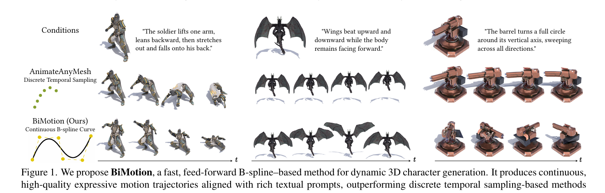
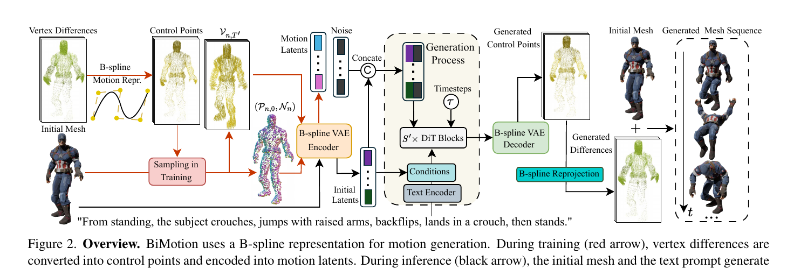
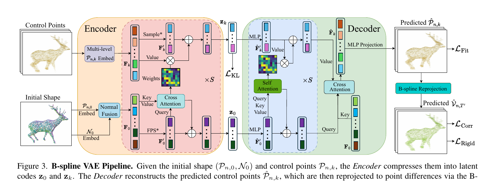
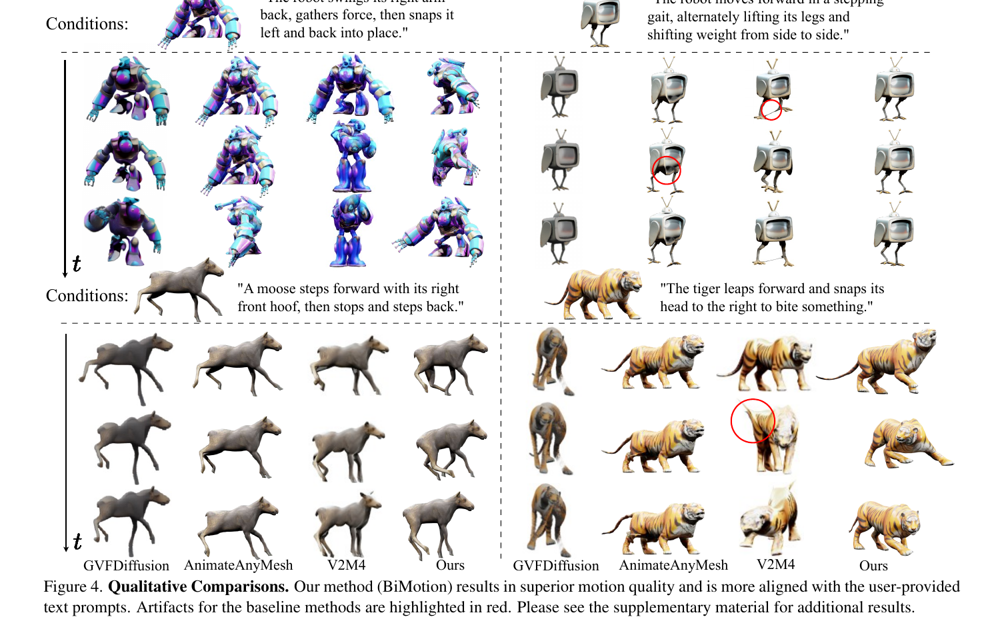
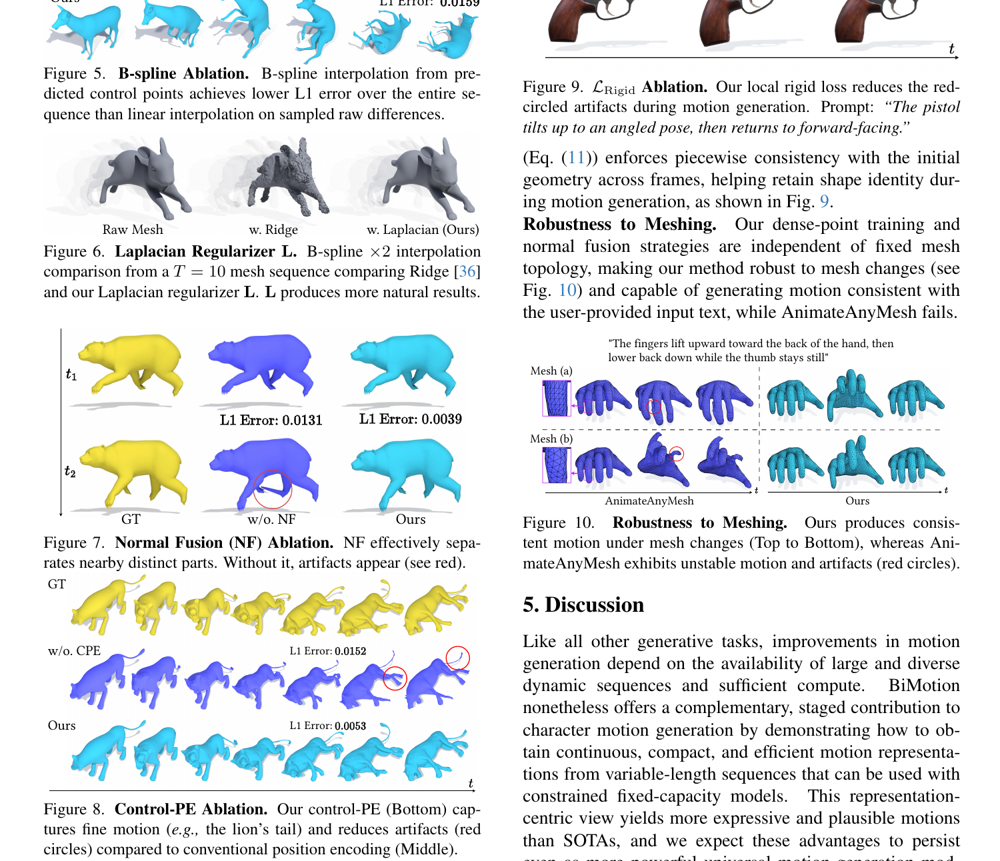

可変長モーションを固定長へ圧縮し、あとから任意長へ再サンプリングする。
この論文は、University of Michigan の Jason J. Corso 教授が著者として参加し、 Xでも紹介していた研究です。Corso 氏はコンピュータビジョン分野の研究者であり、 同時に Voxel51 の共同創業者でもあります。そのため、この論文も 「純粋な理論研究」だけでなく、実際の3D生成ワークフローにどう効くかという視点で読むと理解しやすいです。
この論文は何をやろうとしているのか
この論文がやろうとしているのは、 長くて複雑な動作指示を、既存の3Dメッシュに対して自然なアニメーションとして成立させることです。
たとえば「しゃがむ、跳ぶ、回る、着地する」のような複数段階の動きは、 従来法だと途中で切れたり、動きが弱くなったり、カクついたりしやすい。 BiMotion はこの問題に対して、フレームをそのまま並べて扱うのではなく、 動きそのものを滑らかな曲線として圧縮して持つことで対応します。
著者側の一文要約をそのまま言い換えれば、これは テキスト条件の動的3D生成において、フレームごとに個別処理していたことによるボトルネックを、B-spline ベースのモーション表現で乗り越えようとする研究 です。

Figure 1. 既存法は離散的な時系列サンプリングに寄りやすく、BiMotionは連続B-spline曲線でより意味の通った軌跡を生成する。
先に用語を軽く整理
| 用語 | この記事での意味 |
|---|---|
| B-spline | 少数の点から滑らかな曲線を作る表現。ここでは「動きの軌跡をコンパクトに持つ方法」 |
| 制御点 | 曲線の形を決める基準点。各フレームそのものではない |
| feed-forward | 1回の推論で結果を出すタイプ。速いが、扱える入力形式に制約が入りやすい |
| VAE | データをいったん小さな表現に圧縮し、そこから復元する学習器 |
| 潜在表現 / latent | 圧縮後の内部表現。人間向けの画像ではなく、モデル向けの要約データ |
| diffusion / flow | ノイズから少しずつ望む結果へ近づける生成のやり方 |
| トポロジ | メッシュのつながり方。頂点数や面の構成が変わると別トポロジになる |
何が問題だったのか
既存の text-guided 3D animation は高速ですが、多くが固定長の入力しか扱えません。 その結果、長い動作は切り詰められ、短い動作は間引かれ、複数の意味を含む動作指示が途中で壊れます。
ここでいう feed-forward 型 とは、1回の推論でまとめて答えを出す方式です。 速い反面、入力の長さや形式に強い制約が入りやすい、という背景があります。
固定長入力
「しゃがむ → 跳ぶ → 回る → 着地」のような長いモーション全体をそのまま持ちにくい。
離散フレーム表現
時間的に連続な運動を、点列として雑に扱うため、ぎこちなさや破綻が出やすい。
メッシュ依存コスト
頂点数やトポロジ依存の処理が重く、複雑な対象ほど推論コストが増えやすい。
BiMotionのアイデア
BiMotionは、各頂点の運動をフレーム列として持つ代わりに、 B-splineの制御点として持ちます。重要なのは、 生成器の内部容量を増やすのではなく、モーション表現を連続曲線へ置き換えることです。
制御点は「各フレームの位置そのもの」ではなく、 「その間をどう動くかを決める基準点」と考えると分かりやすいです。
要点
固定16フレームの断片を直接生成するのではなく、 「16個前後の制御点で運動の意味を持たせる」。 その後で必要なフレーム長に再サンプリングする。
B-splineが向く理由
- 連続で微分可能なので軌跡が自然
- 局所制御できるので編集に強い
- 時間再パラメータ化で任意長へ伸縮できる
論文の主張
ボトルネックは「モデル能力不足」だけではなく、 モーションを離散フレームで持っていることそのものにある。
パイプライン

Train
頂点差分を B-spline 制御点へ圧縮し、VAE でモーション潜在へ落とす。VAEは「いったん小さく要約してから戻す装置」と考えるとよい。
Condition
初期メッシュとテキストを条件に、flow/diffusion ベースで潜在を生成する。これはノイズから少しずつ望む動きへ近づける生成法だ。
Decode
制御点を復元し、B-spline から任意長のメッシュ列へ再投影する。

Laplacian正則化
短い系列でも制御点が暴れないよう、滑らかな変化を保つ。要するに「ギザギザな軌跡になりにくくする」調整。
Normal Fusion
位置だけで見分けにくい近接部位を、法線情報で分離しやすくする。法線は「面がどちらを向いているか」の情報。
Control-PE
粗い動作と細かい残差を両方保持する階層的制御点埋め込みを導入する。全体の流れと細部の揺れを別レイヤーで持つイメージ。
Rigidity / Correspondence
再投影後の軌跡と局所形状を監視し、最終メッシュとして破綻しにくくする。ここでの損失は「正解とのズレの大きさ」だ。
結果

| 手法 | OC ↑ | SC ↑ | TF ↑ | AQ ↑ | DD ↑ | Time ↓ | Peak GPU ↓ |
|---|---|---|---|---|---|---|---|
| GVFDiffusion | 0.167 | 0.920 | 0.986 | 0.505 | 0.650 | 2.141m | 14.057GB |
| AnimateAnyMesh | 0.155 | 0.951 | 0.993 | 0.514 | 0.100 | 16.847s | 3.102GB |
| V2M4 | 0.175 | 0.876 | 0.986 | 0.478 | 0.750 | 1.672h | 48.416GB |
| BiMotion | 0.187 | 0.948 | 0.995 | 0.529 | 0.800 | 4.383s | 1.246GB |
指標の読み方も補足すると、OCは「テキストと全体として合っているか」、SCは「見た目の主体が途中で別物になっていないか」、 TFは「時間方向のちらつきの少なさ」、AQは「見た目の品質」、DDは「どれだけしっかり動いているか」です。

実務上の意味
表現設計がまだ強い
Backbone を大きくする前に、可変長時系列を何で表すかを見直す価値がある。Backboneはモデル本体の中心部分のこと。
既存アセットと相性がいい
初期メッシュを与えて動かす方式なので、既存の3D資産ライブラリと接続しやすい。
応用範囲が広い
カメラ軌道、変形、VFXの時系列など、他の可変長生成にも転用しやすい考え方。
限界
- 高周波で複雑なモーションは、制御点数が少ないと表現しきれない。
- 固定メッシュ前提なので、トポロジ変化を伴う運動には対応しない。
- 大規模データと計算資源への依存は依然ある。
結論
BiMotion は、3Dアニメーション生成における本質的な制約を 「モデルサイズ」ではなく「モーション表現」の側から崩した論文です。 長い動作を固定容量モデルで扱いたいなら、フレーム列をそのまま生成するのではなく、 意味を持った連続表現へ圧縮してから生成する。 この方針は今後もかなり再利用されるはずです。